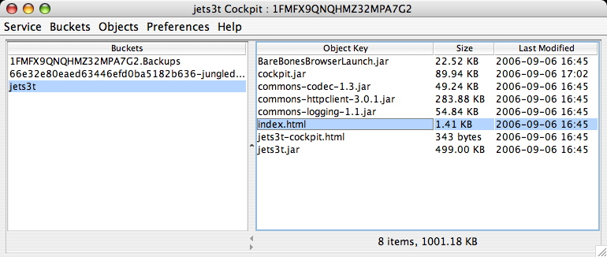
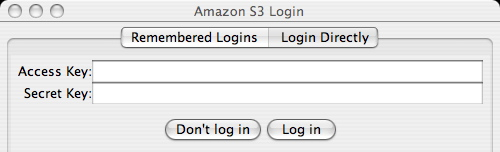
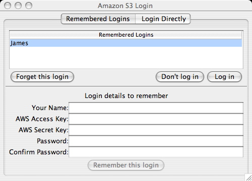
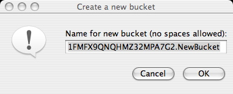
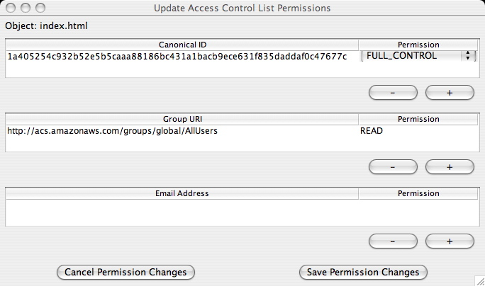
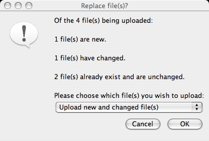
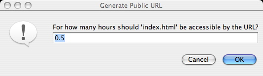

Cockpit is a graphical Java application for viewing and managing the contents of an Amazon S3 account.
It is freely available as part of the jets3t project which provides applications and a Java toolkit for Amazon's S3.
Cockpit can also be run as an online applet at Cockpit Online.
Cockpit offers the following capabilities:
Cockpit may be run as a stand-alone application or as a browser applet.
To run the browser applet visit Cockpit Online.
To obtain the stand-alone version download the jets3t distribution and unzip the archive on your machine. Cockpit can then be run by double-clicking on the file cockpit.jar, or running one of the included cockpit start scripts.
To log in to S3 choose the menu item Service -> Log in.... The login dialog will be displayed for you to provide your AWS Access Key and Secret Key credentials.
The login dialog offers a choice of two ways to provide your credentials. If you choose the "Login Directly" tab you can simply provide your access and secret keys.
Alternately, on the "Remembered Logins" tab you can choose to have your credentials remembered to make logins easier in the future.
On this tab you enter your name, your AWS credentials and a password. When you click Remember this login Cockpit will save your credentials in a password-encrypted file and display your name in the Remembered Logins table. Now you can log in by choosing your name from the list, clicking Log in and entering your password.
If you later wish to remove your remembered login credentials, select your name in the list and click the Forget this login button.
Once you have logged in to S3 you can manage your buckets. Upon log in all your buckets will automatically be displayed in Cockpit's left pane. If your buckets list is empty, it's about time you created a bucket!
To create a bucket, choose the menu item Buckets -> Create new bucket.... You will be prompted to name your bucket. Notice that the default new bucket name includes your Amazon S3 ID string. It is a good idea to leave this string as a prefix for your bucket names to ensure your names are unique in the S3 system.
When you select a bucket name in the left pane, Cockpit will contact S3 and retrieve the list of objects stored in that bucket. This list will be displayed in the right-hand pane.
Aside from allowing you to create buckets, the Buckets menu shows all the operations you can perform on your buckets. For convenience a context menu can also be displayed if you right-click a bucket, though this menu does not include all the operations available in the main menu bar.
Note that some menu options will only be available when you have selected a bucket, otherwise they will be greyed out.
Refresh bucket listing: Cockpit caches the listing of buckets it receives when you first log in. Use this menu item to refresh your bucket listing manually to be sure the listing is up-to-date.
View bucket properties...: Displays the bucket's properties such as the creation date.
Create new bucket...: Creates a new bucket with the name provided
Update bucket's Access Control List...: Allows you to change the access permissions of the bucket (see Access Control Lists)
Add third-party bucket...: A third-party bucket is one owned by someone else but which they have made accessible to you. You can manually add third-party buckets to your listing with this menu item, and once you have done so you can perform whatever operations you like provided you have the necessary permissions. For example, the jets3t bucket containing Cockpit Online is publicly readable, so you can add this to your bucket listing. However we haven't allowed you to do anything but look, sorry...
Delete selected bucket...: Deletes the bucket after prompting for confirmation. Note that you can only delete empty buckets, so you will get an error message if you try and delete a bucket containing any objects.
Once you have logged in to S3 and selected a bucket in Cockpit, the objects contained in that bucket are displayed in the right-hand pane. This object listing is cached by Cockpit so it doesn't have to contact S3 every time you select a bucket. If the object listing gets out-of-date, for example if another application or user has updated your objects, you can refresh the object listing with the menu item Objects -> Refresh object listing
Like the Buckets menu, the Objects menu shows all the operations you can perform on objects, though some operations will only be available if there is an object selected. There is also a reduced context menu available if you right-click on an object.
Refresh object listing: Refreshes Cockpit's cached list of objects
View object properties...: Displays the object's properties, such as the object's size, content type, and all metadata items. NOTE: this menu item is only available if a single object is selected at a time.
Update selected object(s) Access Control List(s)...: Allows you to change the access permissions of the object (see Access Control Lists)
Download selected object(s)...: This menu item will prompt for a target directory, then download all the selected objects into that directory. If the objects being downloaded were stored in a directory structure (eg if you uploaded a directory containing other directories and files) that directory structure will be re-created in the target location.
Generate Public URL...: This menu item allows you to generate a time-limited URL string that can be used by anyone to access a private object, but only up until the time you specify. This operation will prompt you for the number of hours until the URL will expire (the number can be a fraction, eg 0.5 for 30 minutes) and will generate the appropriate signed URL. See Time-limited URLs.
Generate Torrent URL...: This menu item generates a URL that will make an object available via the BitTorrent protocol. If you save the Torren tdocument returned from this URL, you can open it in a BitTorrent client.
Delete selected object(s): Deletes the currently selected object or objects, after prompting for confirmation.
You upload files to S3 by selecting a target bucket, then using drag-and-drop to place one or more files/folders over the right-hand object pane. Cockpit examines the files (this may take some time for large files) then uploads them to S3 provided there are no clashes (see Automatic File Comparisons)
Cockpit displays a progress dialog during uploads showing how much of the total data has been uploaded. Uploads can be cancelled at any time.
If a folder is uploaded, Cockpit will upload the folder and all its contents to S3 and store enough information to re-create the folder structure exactly. It does this by creating an empty object for each folder or sub-folder, and tagging the object with the content type application/x-directory.
The Preferences menu only applies to file uploads.
The menu allows you to set the options of Gzipping and/or Encrypting all files uploaded to S3. Gzipping (compressing) files may save space in S3 and reduce the time taken for uploads, provided the files compress well (movies and mp3 files do not compress well.
Encrypting files may help to protect sensitive information, especially if you don't trust the operators of S3. The encryption relies on a password you provide, and files will only be readable by someone with that password. Beware of using more than one password in a bucket, as Cockpit is only smart enough to handle one password at a time when downloading. NOTE: jets3t does not presume to offer industrial-strength encryption. We use secure algorithms (Triple DES/CBC/PKCS5) but we are not security experts. If you are really paranoid about your data, you should encrypt files yourself with a serious crypto package before uploading them to S3.
Preferences are not saved by Cockpit, and will have to be re-set each time you run the application.
Cockpit does not support drag-and-drop copying of files from S3 to your computer - unfortunately Java makes this infeasible. To download objects from S3 you must select the objects you want, then choose the menu item Objects -> Download selected object(s)
If you download objects contained in a folder structure, that folder structure will be re-created on your computer (provided the files were initially uploaded with a jets3t tool).
Cockpit will automatically unzip GZipped objects, and decrypt Encrypted objects (promting you for the password if necessary)
Before downloading, Cockpit will compare any files present in the target location against the objects in S3 and detect any clashes (see Automatic File Comparisons)
Amazon S3 uses Access Control List (ACL) settings to control who may access or modify items stored in S3. By default, all buckets and objects created in S3 are accessible only to the account owner.
Cockpit allows object owners to change the ACL settings for their objects by selecting the Update Access Control List menu item in the bucket or object menus. ACL settings are managed in the Update Access Control List dialog.
The default ACL setting is for the object's creator, represented by a Canonical ID, to have Full control.
The most common ACL change is to allow public access to a bucket or object. An object is made publicly accessible in S3 by granting READ access to members of the All Users group. To do this:
Note that objects may also be made publicly available for a limited time using Time-limited URLs.
All ACL combinations supported by Amazon S3 can be set using this dialog box. However this is a complex topic and we won't deal with it here, please refer to Amazon's technical documentation for more information about the use of Access Control Lists.
Cockpit automatically compares files that are being uploaded or downloaded with files in the destination to detect clashes. When a file with the same name exists on the target, Cockpit determines whether the file has changed, and if so which version of the file is the most recent.
Each file is given one of the following status types:
If there are Unchanged or Changed files, the Replace file(s) dialog is displayed.
This dialog allows you to choose which clashing files in the destination should be replaced, if any. The options available may include the following:
File comparisons are done using MD5 hashes of the file contents.
A private object stored in S3 can be made publicy available for a limited time using a signed URL. The signed URL can be used by anyone to download the object, and after a chosen time the URL will no longer work.
Time limited URLs are created using the Objects -> Generate Public URL... menu item. A dialog is displayed prompting for the number of hours until the URL will expire. This number can be a fraction, for example the value 0.5 will create a URL which works for half an hour.
After providing the number of hours the Signed URL dialog box will display with a lengthly URL. This URL will work in any web browser, but only for the length of time you specified. Send this URL to the person who needs the object.